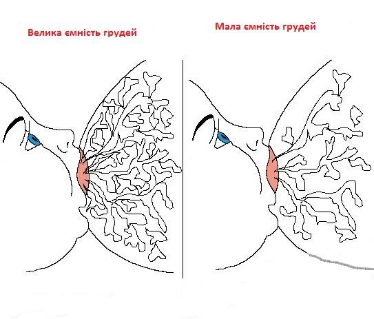

Про механізм вироблення молока і чи розмір має значення
Давайте поговоримо про питання, яке обросло різноманітними міфами: про великі і малі груди. Сюди ж приписують розповіді про «молочних» мам. Чи має сенс котрийсь з цих стереотипів?
В наш час дуже багато жінок задумуються над питаннями: “Чи зможу я годувати, якщо у мене маленькі груди?” або “Як саме виробляється молоко і від чого це залежить?” В даній статті я хочу спробувати детально і просто пояснити, як усе відбувається.
Як тільки народжується дитина, першим прикладанням до грудей, з першими краплями випитого поживного молозива, вона запускає сигнал до гіпофіза матері, а звідти вступає в дію весь гормональний біомеханізм, який відразу дає відповідь у вигляді поставок молока. Як правило, молоко прибуває на 3-5 добу. (Детальніше почитати про прихід молока і від чого він буде залежати можна в статті Анни Соколенко.)
Надалі в силу вступатиме не гормональний процес, а система попит-пропозиція. Це працює наступним чином: що частіше і продуктивніше смоктатиме дитина, то краще буде вироблятись молоко. Тобто дитина зможе отримувати рівно стільки грудного молока, скільки їй потрібно для задоволення своїх потреб для гармонійного розвитку.
Дослідники з Університету Західної Австралії виявили, що протягом доби швидкість вироблення молока є непостійною. Вона зворотньо пропорційна наповненості грудей. Тобто, молоко в груді, до якої ви щойно прикладали маля буде вироблятись швидко на противагу іншій груді, яку Ви будете давати наступного разу. Адже в другій груді швидкість прибування молока буде сповільнена, щоби не допустити переповнення. Також було виявлено, що швидкість вироблення молока змінювалась від 40мл/год у груді, до якої була прикладена дитина до 10 мл/год у повній груді. Тому настільки важливими є часті прикладання, не менше 10-12 разів на добу. І саме через це ми маємо пам’ятати, наскільки некорисною і шкідливою є порада у дотриманні режиму та довгих перерв між годуваннями 3-4 години.
Чи розмір усе ж має значення?

По-перше, варто пам’ятати, що розмір грудей і ємність грудей – різні величини. Груди можуть бути розміру A або розміру E, при цьому обидві жінки матимуть однакові шанси на успішне ГВ. Молоко виробляється і зберігається в протоках та альвеолах. І тільки ємність грудей буде визначати, яка ж максимальна кількість молока може одночасно зберігатись в грудях. І цей об’єм, так само, як і розмір грудей може дуже відрізнятись у різних жінок. І варіюється ця величина досить відчутно – від 80 мл до 600 мл (можна собі тільки уявити наскільки це багато). Тобто, якщо наприклад, жінка може зцідити до 90 мл молока за раз, то, швидше за все, вона має малий або середній об’єм, якщо ж 120 мл - то це середній або великий (але не забуваємо про той факт, що в декого взагалі не дуже виходить зцідити молоко і така інформація тоді не буде показовою). А от добова кількість молока при цьому буде фактично однаковою – 790-900 мл.
Також, цікавим фактом, виявленим під час проведення дослідження, стала різниця між ємністю грудей мам, які годують хлопців (394 ± 126 г) та мам, які годують дівчат (333 ± 71 г)
г). Відповідно і відрізнялась добова кількість молока. Для мам хлопців вона становила 831 ± 187 г, а для мам дівчат - 755 ± 151 г. Що ж до інтенсивності споживання грудного молока, то зазвичай діти випивають 64% молока в проміжку з 6 ранку до 18 вечора, а решту 26% після 18.00.
Більшість дітей (64%) мають від 1 до 3 нічних годувань в проміжку між 22.00 і 04.00, і тільки 36% з групи, яка приймала участь у дослідженні не мали нічних годувань. Діти, які не прикладались вночі, споживали в рази більше молока зранку, аніж вдень та ввечері. Як так виходить, що ємність грудей різна, а молока вони виробляють однаково?
Відповідь є цілком логічною та математичною. Річ у тім, що в цих мам буде різна швидкість вироблення молока: в тої мами, в якої ємність грудей велика, молоко буде вироблятись повільніше, а в тієї, де дитинка випиватиме одразу майже все молоко, яке є в грудях, – швидкість вироблення буде набагато більшою. Тому в другому випадку саме часті прикладання матимуть вирішальну роль. Крім того, ось і відповідь на запитання, чому ми часом можемо зустріти мам, дітки яких прикладаються рідше і при цьому гарно набирають вагу: швидше за все, їхні матері мають велику ємність грудей і малу швидкість вироблення молока. А от мама з невеликою ємністю грудей, послухавши рекомендації про режим, може отримати проблеми з набором ваги і зменшення кількості молока. Ось чому так важливо дотримуватись оптимальної кількості прикладань.
Отже, прикладайте своїх малят на першу вимогу; не обмежуйте їх час перебування біля грудей; насолоджуйтесь грудним вигодовуванням, адже діти ростуть дуже швидко.
Тепер ви з легкістю зможете пояснити, чому ж розмір не має значення.
Джерела:
- Jacqueline C. Kent, Leon R. Mitoulas, Mark D. Cregan, Donna T. Ramsay, Dorota A. Doherty, Peter E. Hartmann. - Volume and Frequency of Breastfeedings and Fat Content of Breast Milk Throughout the Day, Pediatrics March 2006, VOLUME 117 / ISSUE 3
- Jacqueline C. Kent, Leon Mitoulas , David B. Cox, Robyn A. Owens and Peter E. Hartmann. — Breast volume and milk production during extended lactation in women Experimental Physiology. — (1999), 84:435-447
- Kent, J. C. (2007). How breastfeeding works. J Midwifery Womens Health, 52(6), 564-570.
- How much milk do you expect to pump? https://breastfeedingusa.org/content/article/how-much-milk-should-you-expect-pump-0
- Виктория Нестерова, для журнала АКЕВ http://breastfeeding.narod.ru/milkprod.html
Статтю редагувала Юля Олех